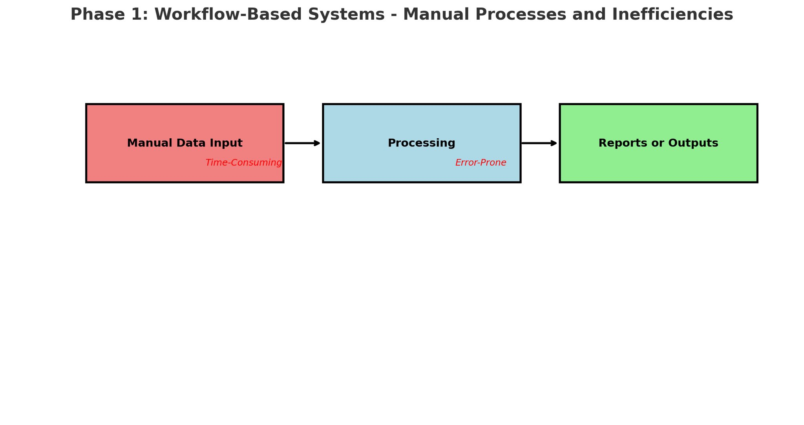
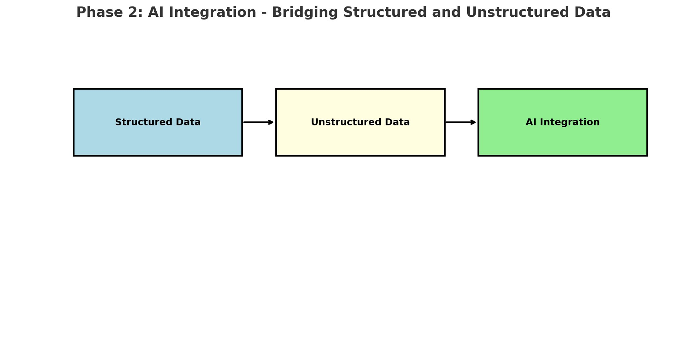
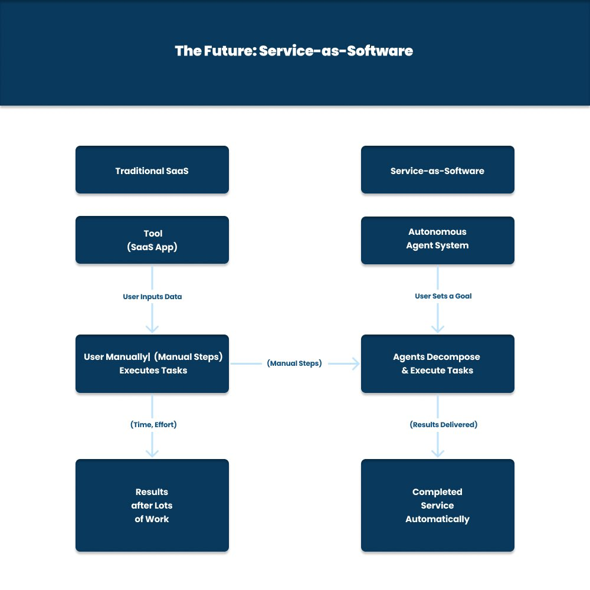
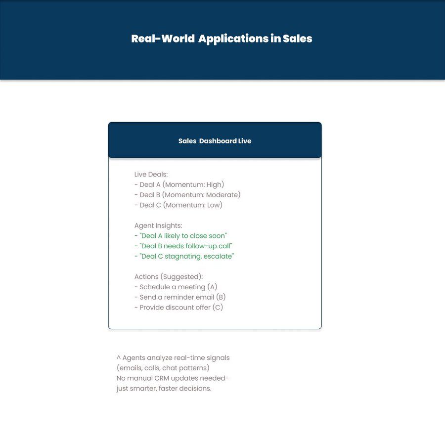
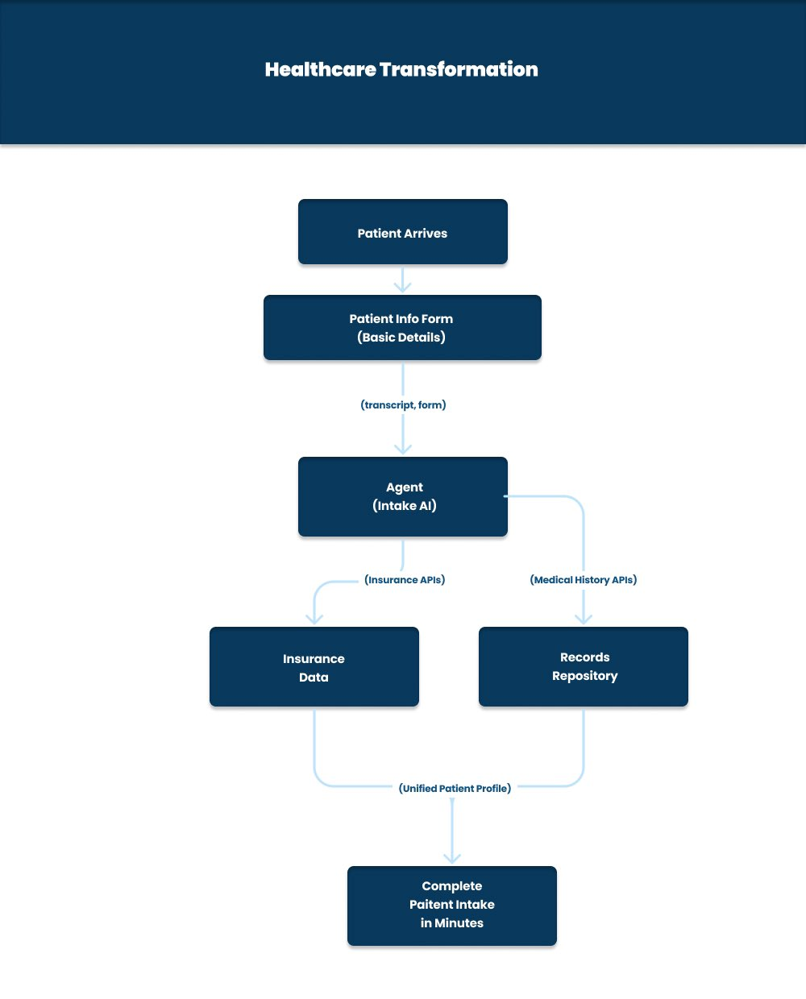

The Evolution of Software: From Tools to Autonomous Agents
Introduction: A New Era of Software Innovation
Software is evolving at an unprecedented pace, transitioning from traditional tools that support human workflows to autonomous agents capable of executing tasks and making decisions independently. This paradigm shift is not merely a technological advancement—it represents a fundamental transformation in how we interact with and leverage software in our personal and professional lives.
Imagine a world where software doesn't just assist you in your work but actively works for you, handling complex tasks autonomously and delivering results with minimal human intervention. This article explores the evolution of software through three distinct phases—workflow-based systems, AI integration, and systems of agents—while highlighting real-world applications, economic implications, and the future potential of this revolution. Let's dive into the journey of software evolution, step by step.
Phase 1: Workflow-Based Systems—Manual Processes and Inefficiencies
In the early days of software development, applications like Customer Relationship Management (CRM) systems were primarily designed as workflow-based tools. These systems relied heavily on manual data entry, requiring users to input structured data to enable basic functionality. While these tools were groundbreaking at the time, they were limited by their dependence on human input and the quality of the data provided.
The Challenge of Manual Processes
Manual processes were inherently time-consuming and prone to errors. For example, a salesperson updating a CRM might need to enter every client interaction—phone calls, emails, meeting notes—manually. Any missed detail, incomplete information, or human error could significantly diminish the system's effectiveness. The result was often inefficient workflows, incomplete datasets, and biased outcomes based on the limitations of human input. This phase laid the foundation for modern software but highlighted a critical need for automation and intelligence to reduce human effort and improve accuracy.
Phase 2: AI Integration—Bridging Structured and Unstructured Data
The rise of Artificial Intelligence (AI), particularly with the advent of Large Language Models (LLMs), marked a significant breakthrough in software development. AI enabled software to process not only structured data (like spreadsheets and databases) but also unstructured data, such as emails, documents, and conversational data. This expansion of data processing capabilities transformed software from rigid tools into smarter, more adaptive systems.
The Impact of AI on Software
AI-powered tools began identifying patterns, making recommendations, and automating repetitive tasks. For instance, AI could summarize customer emails, suggest follow-up actions, or predict sales outcomes based on historical data. However, these systems still required significant human oversight to manage workflows, validate outputs, and ensure alignment with business goals. While AI integration was a major step forward, it wasn't yet capable of fully autonomous operation.
Example in Action
Consider a sales team using an AI-enhanced CRM. The system might analyze incoming emails and suggest follow-ups for high-priority leads, but a human still needed to review the recommendations, execute the actions, and update the system manually. This hybrid approach improved efficiency but fell short of true autonomy.
Phase 3: Systems of Agents—Autonomous Collaboration for Goal Achievement
We are now entering a transformative era defined by Systems of Agents—AI-powered systems that operate collaboratively, like a team of specialists, to achieve specific goals. Unlike previous phases, these agents don't require constant human oversight. Instead, they break down complex objectives into smaller, actionable tasks, execute those tasks autonomously, and combine the results to deliver a complete solution.
How Systems of Agents Operate
Systems of Agents function through a three-step process:
- Decompose Goals into Tasks: Agents analyze a user-defined goal (e.g., "Close a sales deal") and break it into smaller, manageable tasks (e.g., schedule a follow-up call, send a discount offer).
- Execute Tasks: The agents perform these tasks in sequence or parallel, leveraging real-time data and advanced algorithms.
- Combine Outputs: The agents integrate their outputs to deliver a final result, such as a completed sales process or a unified patient profile.
This level of autonomy represents a game-changer, allowing software to act as a digital workforce, tirelessly working in the background to achieve user-defined objectives.
Real-World Applications of Systems of Agents
Sales: Streamlining Processes with Real-Time Intelligence
In sales, agent systems analyze real-time signals—emails, calls, chat patterns, and CRM data—to optimize workflows and improve outcomes. For instance, an agent system might:
- Detect which deals are likely to close soon based on customer interactions.
- Recommend follow-up actions for leads requiring attention.
- Escalate stagnating deals to senior staff for intervention.
Scenario
Imagine a sales manager setting a goal: "Close Deal A by next week." The agent system would analyze real-time data, identify key customer interactions, suggest actions like scheduling a reminder email or offering a discount, and automate follow-ups—all without manual CRM updates. This results in smarter, faster decisions with minimal human effort.
Healthcare: Transforming Patient Intake with Efficiency
In healthcare, agent systems are revolutionizing administrative processes, such as patient intake. Agents can:
- Pull data from transcripts, forms, and APIs (e.g., insurance records, medical histories).
- Consolidate this information into a unified patient profile.
Scenario
When a patient arrives at a clinic, an agent system processes their intake forms, retrieves insurance data via APIs, and pulls medical history from a repository. Within minutes, it generates a complete patient profile, freeing doctors from hours of paperwork and allowing them to focus on patient care.
The Future: Service-as-Software
The ultimate vision for software is "Service-as-Software," where applications act like highly trained teams, delivering services autonomously without requiring constant human input. This marks a stark contrast to traditional Software-as-a-Service (SaaS) models, which depend on users to input data and execute tasks manually.
Traditional SaaS vs. Service-as-Software
- Traditional SaaS: Users input data into tools (e.g., a CRM or project management app), manually execute tasks through multiple steps, and achieve results only after significant effort.
- Service-as-Software: Users set a goal (e.g., "Generate a sales report"), and autonomous agents decompose the goal into tasks, execute them, and deliver completed results automatically.
This shift from tools to services redefines software's role, transforming it into a proactive partner capable of handling end-to-end processes with minimal intervention.
Building Effective Systems of Agents
To unlock the full potential of Systems of Agents, businesses must focus on three key factors:
- Proximity to Data: Position agents close to data sources to access real-time insights, ensuring timely and accurate decision-making.
- Autonomy: Enable agents to act independently, reducing the need for human intervention and increasing efficiency.
- Capability: Equip agents with the ability to process unstructured data (e.g., emails, voice recordings) and transform it into actionable results.
By prioritizing these elements, organizations can build robust, scalable systems that drive innovation and competitiveness.
Economic Implications of Autonomous Software
The rise of Systems of Agents isn't just a technological shift—it has profound economic implications. Businesses can:
- Scale operations using AI systems instead of hiring additional human labor.
- Reallocate budgets traditionally spent on training and hiring to invest in advanced AI solutions.
The Opportunity
Industries that adopt Systems of Agents early will gain a significant competitive advantage. Imagine scaling your business operations without proportionally increasing costs—a reality made possible by autonomous software.
Conclusion: Redefining Software for the Future
Systems of Agents are redefining the software landscape, evolving from simple tools to autonomous services that deliver unmatched efficiency, accuracy, and scalability. These systems don't merely assist us in our work—they do the work for us, handling complex tasks independently and delivering results that transform industries.
As we move forward, the potential for innovation is limitless. From sales and healthcare to countless other sectors, Systems of Agents promise to revolutionize how we live and work.
Call to Action: Build Your Own System of Agents
As a businessman passionate about AI innovation, I've witnessed firsthand the transformative power of Systems of Agents. If you're inspired to bring this technology into your business or explore building your own autonomous system, I'd love to connect. Reach out via direct message, and let's collaborate to create something extraordinary together. The future of software is here—let's shape it!